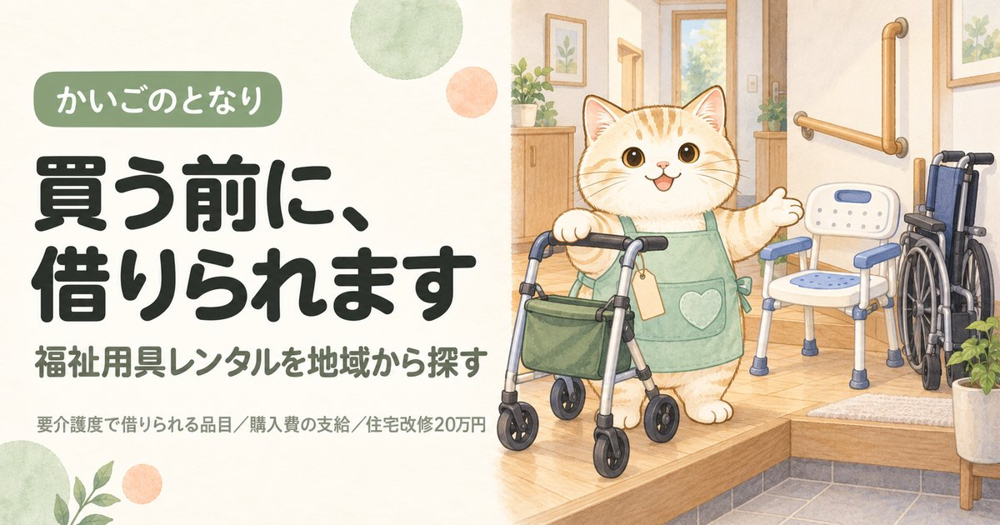

足立区の福祉用具一覧｜借りるか買うかで事業所が変わります

東京都足立区で福祉用具のレンタルや購入を考えている方へ。東京都の指定を受けた52件から52件を連絡先つきで掲載し、そのうち貸与と販売の両方を扱う事業所が50件あることまで示しました。介護保険で福祉用具を買う場合、指定を受けた事業者から買ったものにしか支給されません。同じ商品をネット通販で買っても1円も戻らないので、ここが最初の分かれ目になります。
目次
足立区で福祉用具を借りる・買うとき、最初に押さえること
足立区には東京都の指定を受けた福祉用具の事業所が52件あります。数が多いので、価格と品ぞろえで比べる余地があります。福祉用具でいちばん多い失敗は、値段でも品ぞろえでもなく保険の出ない買い方をしてしまうことです。
①ケアマネジャー、いなければ地域包括支援センター（ホウカツ）に相談 → ②借りるか買うかを決める → ③足立区の指定事業所から選ぶ → ④買う場合は購入前に区へ申請の相談をする。
買ってから相談しても、後から支給されないことがあります。
借りられる用具と買える用具の一覧、軽度の方が使えない用具、レンタル価格の決まり方は福祉用具を地域から探すにまとめています。足立区に限らず共通の内容です。
足立区の福祉用具事業所一覧
足立区内の福祉用具貸与・特定福祉用具販売の指定事業所から52件を掲載しています（東京都公表・2026年9月1日時点）。区内には52件が指定を受けており、そのすべてを掲載しています。「貸与と販売」「貸与のみ」「販売のみ」の表示は、東京都の一覧でその事業所がどちらのサービス種類で指定を受けているかによります。取扱商品や価格は事業所ごとに違い、この一覧では扱っていません。掲載順は事業所の優劣を示すものではありません。
1株式会社セリオ東京北営業所
- 所在地
- 東京都 足立区 綾瀬６－１６－１６ジュネス綾瀬１０１号室
- 運営法人
- 株式会社セリオ
- 電話
- 03-5856-3758
- サービス提供日
- 平日
- 事業所番号
- 1370704379
- 公式サイト
- serio888.net（外部サイトが開きます）
2有限会社 ライフケアー
- 所在地
- 東京都 足立区 小台２－２８－１６
- 運営法人
- 有限会社ライフケアー
- 電話
- 03-3800-7774
- 事業所番号
- 1371700681
3やさしい手 住環境事業本部 東営業所
- 所在地
- 東京都 足立区 一ツ家１－２２－２１ ウェルズ２１足立パートⅠ
- 運営法人
- 株式会社やさしい手
- 電話
- 05017525771
- サービス提供日
- 平日
- 事業所番号
- 1371801885
- 公式サイト
- yasashiite.com（外部サイトが開きます）
4ベストリハ福祉用具事業所北千住
- 所在地
- 東京都 足立区 千住２－３吾妻ビル６階
- 運営法人
- ベストリハ株式会社
- 電話
- 03-5813-9898
- サービス提供日
- 平日
- 事業所番号
- 1371804723
- 公式サイト
- bestreha.com（外部サイトが開きます）
5ウメモトコーポレーション 介護用品の店梅元
- 所在地
- 東京都 足立区 西新井栄町３－３－８
- 運営法人
- 株式会社ウメモトコーポレーション
- 電話
- 03-3880-9330
- サービス提供日
- 平日・土曜日
- 事業所番号
- 1372100592
- 公式サイト
- umemoto.co.jp（外部サイトが開きます）
6有限会社 福祉の家
- 所在地
- 東京都 足立区 入谷４－１７－１８
- 運営法人
- 有限会社福祉の家
- 電話
- 03-3857-2941
- サービス提供日
- 平日・土曜日
- 事業所番号
- 1372100659
- 公式サイト
- fukushinoie.co.jp（外部サイトが開きます）
7まごの手 本店
- 所在地
- 東京都 足立区 足立４－３７－１１
- 運営法人
- 佐々木ケアサービス株式会社
- 電話
- 03-3848-0190
- サービス提供日
- 平日・土曜日
- 事業所番号
- 1372100733
- 公式サイト
- magonote.com（外部サイトが開きます）
8城北介護センター
- 所在地
- 東京都 足立区 千住宮元町３０－４
- 運営法人
- 株式会社ダイユウケアシステム
- 電話
- 03-3870-4888
- サービス提供日
- 平日
- 事業所番号
- 1372101152
- 公式サイト
- jyohokukaigo.com（外部サイトが開きます）
9介護用品の店 ゆいま～る
- 所在地
- 東京都 足立区 千住中居町１２－６
- 運営法人
- 株式会社トータルケアサービス加島
- 電話
- 03-5284-6301
- サービス提供日
- 平日・土曜日
- 事業所番号
- 1372101178
- 公式サイト
- kaigo-yuimaru.co.jp（外部サイトが開きます）
10介護ショップペンギン
- 所在地
- 東京都 足立区 梅島１－９－５
- 運営法人
- 株式会社ケアフレンド
- 電話
- 03-6807-2171
- サービス提供日
- 平日・土曜日
- 事業所番号
- 1372101673
- 公式サイト
- carefriend.co.jp（外部サイトが開きます）
11株式会社あおばライフケア
- 所在地
- 東京都 足立区 梅島３－３３－１
- 運営法人
- 株式会社あおばライフケア
- 電話
- 03-5888-2333
- サービス提供日
- 平日・土曜日・祝日
- 事業所番号
- 1372102804
- 公式サイト
- aoba-lifecare.com（外部サイトが開きます）
12ホットプランニング足立有限会社 介護支援事業部
- 所在地
- 東京都 足立区 綾瀬５－７－９シティービル１階Ｂ号
- 運営法人
- ホットプランニング足立有限会社
- 電話
- 03-3620-7393
- サービス提供日
- 平日・土曜日・祝日
- 事業所番号
- 1372103034
- 公式サイト
- hotplanning.co.jp（外部サイトが開きます）
13株式会社 星医療酸器東京事業所
- 所在地
- 東京都 足立区 入谷七丁目１１番１２号
- 運営法人
- 株式会社星医療酸器
- 電話
- 03-3899-8855
- サービス提供日
- 平日
- 事業所番号
- 1372104081
- 公式サイト
- hosi.co.jp（外部サイトが開きます）
14ヒラタ
- 所在地
- 東京都 足立区 鹿浜８－１１－５ロイヤルハイム小松原１０５号室
- 運営法人
- 有限会社 ヒラタ
- 電話
- 03-5839-3270
- サービス提供日
- 平日・土曜日
- 事業所番号
- 1372104719
15介護の一休
- 所在地
- 東京都 足立区 南花畑４－１７－８ＡＥＲビル２階
- 運営法人
- 株式会社陽平
- 電話
- 03-3885-7731
- サービス提供日
- 平日・土曜日・日曜日・祝日
- 事業所番号
- 1372104867
- 公式サイト
- yohei-care.com（外部サイトが開きます）
16まっかな花
- 所在地
- 東京都 足立区 谷中２－７－１３
- 運営法人
- アクティブライフ株式会社
- 電話
- 03-5682-7117
- サービス提供日
- 平日・土曜日
- 事業所番号
- 1372105021
17介護用品の店 いきいき
- 所在地
- 東京都 足立区 西新井５－４２－１６
- 運営法人
- 有限会社生き活きサポート
- 電話
- 03-3899-9787
- サービス提供日
- 平日・土曜日
- 事業所番号
- 1372105062
- 公式サイト
- ikiiki-support.co.jp（外部サイトが開きます）
18すまサポ
- 所在地
- 東京都 足立区 綾瀬３－２５－１９
- 運営法人
- 株式会社マイクロエレベーター
- 電話
- 03-5616-3725
- サービス提供日
- 平日
- 事業所番号
- 1372106979
- 公式サイト
- sumai.panasonic.jp（外部サイトが開きます）
19レンタルサービス ソラスト東東京
- 所在地
- 東京都 足立区 竹の塚１－３０－２０泰尚ビル３Ｆ
- 運営法人
- 株式会社ソラスト
- 電話
- 03-5831-6821
- サービス提供日
- 平日・土曜日
- 事業所番号
- 1372107456
20株式会社 まごころ
- 所在地
- 東京都 足立区 関原３－３３－５ １Ｆ
- 運営法人
- 株式会社まごころ
- 電話
- 03-5845-3215
- サービス提供日
- 平日・土曜日
- 事業所番号
- 1372107589
21株式会社 苑田メディコ
- 所在地
- 東京都 足立区 保木間４－１５－１６
- 運営法人
- 株式会社苑田メディコ
- 電話
- 03-5856-7820
- サービス提供日
- 平日
- 事業所番号
- 1372107597
- 公式サイト
- sonoda-medico.com（外部サイトが開きます）
22フランスベッド株式会社 メディカル足立営業所
- 所在地
- 東京都 足立区 宮城１－４－３
- 運営法人
- フランスベッド株式会社
- 電話
- 03-5902-0331
- サービス提供日
- 平日・土曜日
- 事業所番号
- 1372107654
- 公式サイト
- francebed.co.jp（外部サイトが開きます）
23株式会社 トーカイ 足立営業所
- 所在地
- 東京都 足立区 江北６－１１－１０
- 運営法人
- 株式会社トーカイ
- 電話
- 03-5838-1610
- サービス提供日
- 平日
- 事業所番号
- 1372109080
- 公式サイト
- tokai-corp.com（外部サイトが開きます）
24らいふケア
- 所在地
- 東京都 足立区 花畑５－２－８
- 運営法人
- 有限会社レーザテクノジャパン
- 電話
- 03-5851-5544
- サービス提供日
- 平日
- 事業所番号
- 1372109155
25株式会社 フロンティア 足立営業所
- 所在地
- 東京都 足立区 竹の塚１－２７－１
- 運営法人
- 株式会社フロンティア
- 電話
- 03-5851-3161
- サービス提供日
- 平日・土曜日
- 事業所番号
- 1372109338
- 公式サイト
- frontier-ph.com（外部サイトが開きます）
26株式会社 ケアネットワーク
- 所在地
- 東京都 足立区 扇３－１６－１８－３０２
- 運営法人
- 株式会社ケアネットワーク
- 電話
- 03-5837-4527
- 事業所番号
- 1372109510
27ＯＨＩケアサービス
- 所在地
- 東京都 足立区 保木間３－３５－１－２０２
- 運営法人
- 合資会社ミラクル
- 電話
- 03-6312-0553
- サービス提供日
- 平日・祝日
- 事業所番号
- 1372111706
- 公式サイト
- hp.kaipoke.biz（外部サイトが開きます）
28介護用品のハッコウ 足立営業所
- 所在地
- 東京都 足立区 南花畑２－４６－６
- 運営法人
- 株式会社白興
- 電話
- 03-5809-6741
- サービス提供日
- 平日
- 事業所番号
- 1372111748
29あっぷけあ足立西
- 所在地
- 東京都 足立区 西新井１－５－３ウィステリア大師前２階
- 運営法人
- あっぷけあスマイル株式会社
- 電話
- 03-5809-5189
- サービス提供日
- 平日
- 事業所番号
- 1372112266
- 公式サイト
- upcare.co.jp（外部サイトが開きます）
30ケアリード
- 所在地
- 東京都 足立区 竹の塚１－３３－１０
- 運営法人
- 株式会社わかばケアセンター
- 電話
- 03-5856-7758
- サービス提供日
- 平日
- 事業所番号
- 1372112480
- 公式サイト
- wakaba-care.co.jp（外部サイトが開きます）
31株式会社 ヤマシタ 足立営業所
- 所在地
- 東京都 足立区 西綾瀬３－１７－５ＵＲＢＡＮ２０１号室
- 運営法人
- 株式会社ヤマシタ
- 電話
- 03-3889-2010
- サービス提供日
- 平日・土曜日・日曜日・祝日
- 事業所番号
- 1372112563
- 公式サイト
- ycota.jp（外部サイトが開きます）
32あっぷけあ大師参道
- 所在地
- 東京都 足立区 西新井１－８－２サイトウビル１階
- 運営法人
- あっぷけあスーリール株式会社
- 電話
- 03-6869-5302
- サービス提供日
- 平日
- 事業所番号
- 1372112639
- 公式サイト
- upcare.co.jp（外部サイトが開きます）
33株式会社福祉協同サービス 足立営業所
- 所在地
- 東京都 足立区 柳原１－７－１０
- 運営法人
- 株式会社福祉協同サービス
- 電話
- 03-5284-8590
- サービス提供日
- 平日
- 事業所番号
- 1372113124
- 公式サイト
- fukushi-ks.com（外部サイトが開きます）
34株式会社アットホーム 足立営業所
- 所在地
- 東京都 足立区 六月２－３２－７
- 運営法人
- 株式会社アットホーム
- 電話
- 03-3860-6790
- サービス提供日
- 平日・土曜日
- 事業所番号
- 1372113579
- 公式サイト
- rsr-athome.com（外部サイトが開きます）
35ダスキンヘルスレント足立ステーション
- 所在地
- 東京都 足立区 六月１－１３－７
- 運営法人
- 株式会社ボストン
- 電話
- 03-5851-8036
- サービス提供日
- 平日・土曜日
- 事業所番号
- 1372113611
- 公式サイト
- healthrent.duskin.jp（外部サイトが開きます）
36福祉用具 ファストキャスト
- 所在地
- 東京都 足立区 六町２－７－１７－１０２
- 運営法人
- 合同会社ＦａｓｔＣａｓｔ
- 電話
- 03-5851-8358
- サービス提供日
- 平日
- 事業所番号
- 1372113983
37のるでん
- 所在地
- 東京都 足立区 柳原１－１１－１１
- 運営法人
- ストレスケアリゾート株式会社
- 電話
- 03-6806-1014
- サービス提供日
- 平日・土曜日・日曜日
- 事業所番号
- 1372114114
- 公式サイト
- scr.tokyo.jp（外部サイトが開きます）
38アローライフケア
- 所在地
- 東京都 足立区 六町４－３－２８ラコルト１Ｆ
- 運営法人
- 株式会社夏樹
- 電話
- 05035594328
- サービス提供日
- 平日
- 事業所番号
- 1372114148
- 公式サイト
- natsuki-kaigo.com（外部サイトが開きます）
39スマイル・おきの
- 所在地
- 東京都 足立区 興野１－１４－８
- 運営法人
- 株式会社スマイル・おきの
- 電話
- 03-6807-2447
- サービス提供日
- 平日
- 事業所番号
- 1372114171
- 公式サイト
- smile-okino.com（外部サイトが開きます）
40気宇
- 所在地
- 東京都 足立区 扇１－４４－３
- 運営法人
- 株式会社ベストハンク
- 電話
- 09025642631
- サービス提供日
- 平日・土曜日
- 事業所番号
- 1372114429
41ウイズ ｏｎｅ
- 所在地
- 東京都 足立区 花畑３－１７－６
- 運営法人
- 株式会社ＮＥＸＴＯｎｅ
- 電話
- 03-5856-6816
- サービス提供日
- 平日
- 事業所番号
- 1372114460
- 公式サイト
- nextone-hanahata.com（外部サイトが開きます）
42あかつき
- 所在地
- 東京都 足立区 竹の塚４－２－７アーク竹ノ塚マンション１０１号室
- 運営法人
- 有限会社アカツキ
- 電話
- 03-5856-5333
- サービス提供日
- 平日
- 事業所番号
- 1372114486
43ベストサポート
- 所在地
- 東京都 足立区 鹿浜１－２０－１２さくらビル５０１
- 運営法人
- 株式会社ＳＴウィル
- 電話
- 03-5930-5492
- サービス提供日
- 平日
- 事業所番号
- 1372114536
44福祉用具ケアろぐ
- 所在地
- 東京都 足立区 鹿浜２－２５－１－３０１
- 運営法人
- 株式会社ケアろぐ
- 電話
- 07085496197
- サービス提供日
- 平日
- 事業所番号
- 1372114676
- 公式サイト
- carelog2021.com（外部サイトが開きます）
45有限会社 東関東サービス 東京支店
- 所在地
- 東京都 足立区 辰沼２－６－１０
- 運営法人
- 有限会社東関東サービス
- 電話
- 03-5849-5323
- サービス提供日
- 平日
- 事業所番号
- 1372114767
46ＬＩＦＥマネジメント
- 所在地
- 東京都 足立区 竹の塚６－２２－２ドリームコート２０１
- 運営法人
- 合同会社ＬＩＦＥマネジメント
- 電話
- 03-5856-5057
- サービス提供日
- 平日
- 事業所番号
- 1372114874
- 公式サイト
- mgmt-life.jp（外部サイトが開きます）
47パナソニックエイジフリーショップ足立
- 所在地
- 東京都 足立区 新田１－１７－３
- 運営法人
- 日建リース工業株式会社
- 電話
- 03-4332-6833
- サービス提供日
- 平日・土曜日
- 事業所番号
- 1372114940
- 公式サイト
- sumai.panasonic.jp（外部サイトが開きます）
48ケアフロー
- 所在地
- 東京都 足立区 梅島３－２６－８ＦＬＡＸ西新井１０１号室
- 運営法人
- 合同会社ケアフロー
- 電話
- 03-6806-3235
- サービス提供日
- 平日
- 事業所番号
- 1372114965
49アプリシェイト福祉用具ステーション
- 所在地
- 東京都 足立区 栗原３－１－４エスポワールＫＩＪＩＭＡ５０２号室
- 運営法人
- 株式会社クオリティーライフ
- 電話
- 03-5888-5421
- サービス提供日
- 平日・土曜日・日曜日・祝日
- 事業所番号
- 1372114973
50福祉用具 笑楽 東京
- 所在地
- 東京都 足立区 入谷９－１４－１４
- 運営法人
- 株式会社ビオネスト
- 電話
- 03-5809-5924
- サービス提供日
- 平日
- 事業所番号
- 1372115012
- 公式サイト
- bihonest.com（外部サイトが開きます）
51コルライフ足立
- 所在地
- 東京都 足立区 竹の塚５－１－１４
- 運営法人
- 株式会社日本介護センター
- 電話
- 03-6693-5291
- 事業所番号
- 1372115285
52介護用品ビー・オンプラス
- 所在地
- 東京都 足立区 保木間４－１９－９ １Ｆ
- 運営法人
- 合同会社草加爽風会
- 電話
- 03-5831-5590
- 事業所番号
- 1372115293
上記52件は、2026-09-22に足立区および各事業者の公表情報で確認した内容です。営業時間・対応エリア・空き状況は変動しますので、連絡の前に必ず公式情報をご確認ください。掲載内容の訂正・削除は、お問い合わせからご依頼いただければ理由の説明なしで削除します。
掲載52事業所の内訳
足立区内で掲載している52事業所を、取扱い・所在地・運営法人・開設からの年数の4つの軸で集計しました。事業所ごとの詳細は上の一覧をご覧ください。
貸与と販売のどちらを扱っているか
足立区の掲載52件のうち、貸与と販売の両方を扱うのが50件、貸与だけが1件、販売だけが1件です。入浴用のいすやポータブルトイレは購入しかできないため、貸与だけの事業所では保険を使って買えません。両方を扱う事業所は掲載分の96%で、23区平均の90%より多く、足立区は買うほうの相談がしやすい区です。
| 取扱い | 件数 | 相談するときに効いてくること |
|---|---|---|
| 貸与と販売の両方 | 50件 | 借りるのも買うのも、この1社で完結する。入浴用いすやポータブルトイレも保険を使って買える |
| 貸与のみ | 1件 | 介護ベッドや車いすのレンタルは頼めるが、保険を使った購入はここではできない |
| 販売のみ | 1件 | ポータブルトイレや入浴用いすなどの購入は頼めるが、レンタルは別の事業所を当たることになる |
所在町域
用具は自宅まで運んで組み立てるため、配送範囲は区をまたぐことが多く、所在地は絶対条件ではありません。ただし高さ調整などをあとから頼むときは近いほうが早く来ます。足立区内は87の町域に分かれていて、掲載分がいちばん多いのは竹の塚（6件）です。
| 町域 | 掲載事業所 |
|---|---|
| 竹の塚 | レンタルサービス ソラスト東東京、株式会社 フロンティア 足立営業所、ケアリード、あかつき、ＬＩＦＥマネジメント、コルライフ足立 |
| 保木間 | 株式会社 苑田メディコ、ＯＨＩケアサービス、介護用品ビー・オンプラス |
| 入谷 | 有限会社 福祉の家、株式会社 星医療酸器東京事業所、福祉用具 笑楽 東京 |
| 梅島 | 介護ショップペンギン、株式会社あおばライフケア、ケアフロー |
| 綾瀬 | 株式会社セリオ東京北営業所、ホットプランニング足立有限会社 介護支援事業部、すまサポ |
| 西新井 | 介護用品の店 いきいき、あっぷけあ足立西、あっぷけあ大師参道 |
| 鹿浜 | ヒラタ、ベストサポート、福祉用具ケアろぐ |
| 六月 | 株式会社アットホーム 足立営業所、ダスキンヘルスレント足立ステーション |
| 六町 | 福祉用具 ファストキャスト、アローライフケア |
| 南花畑 | 介護の一休、介護用品のハッコウ 足立営業所 |
| 扇 | 株式会社 ケアネットワーク、気宇 |
| 柳原 | 株式会社福祉協同サービス 足立営業所、のるでん |
| 花畑 | らいふケア、ウイズ ｏｎｅ |
| 一ツ家 | やさしい手 住環境事業本部 東営業所 |
| 千住 | ベストリハ福祉用具事業所北千住 |
| 千住中居町 | 介護用品の店 ゆいま～る |
| 千住宮元町 | 城北介護センター |
| 宮城 | フランスベッド株式会社 メディカル足立営業所 |
| 小台 | 有限会社 ライフケアー |
| 新田 | パナソニックエイジフリーショップ足立 |
| 栗原 | アプリシェイト福祉用具ステーション |
| 江北 | 株式会社 トーカイ 足立営業所 |
| 興野 | スマイル・おきの |
| 西新井栄町 | ウメモトコーポレーション 介護用品の店梅元 |
| 西綾瀬 | 株式会社 ヤマシタ 足立営業所 |
| 谷中 | まっかな花 |
| 足立 | まごの手 本店 |
| 辰沼 | 有限会社 東関東サービス 東京支店 |
| 関原 | 株式会社 まごころ |
運営法人の種別
掲載52件のうち営利法人が52件と最も多くなっています。福祉用具は他のサービスと違い、足立区でもほとんどが営利法人です。介護保険のサービスのなかでは、いちばん一般の商売に近い分野だからです。そのぶん品ぞろえと価格には差が出ます。
| 法人の種別 | 件数 | 傾向 |
|---|---|---|
| 営利法人 | 52件 | 株式会社・有限会社など。住宅街の中の小規模な事業所が多い |
対応している曜日
掲載52件のうち、日曜日も対応するところが4件、土曜日まで含めると22件です。残る4件は公表データに記載がありません。退院の日に合わせてベッドを入れたいことが多く、退院が土曜なら土曜に動ける事業所でないと間に合いません。足立区は平日だけの事業所も少なくありません。
| 対応日 | 件数 | こんなときに |
|---|---|---|
| 日曜日も | 4件 | 週末も家族が休めない場合の受け皿 |
| 土曜日まで | 18件 | 日曜だけ別の手段が要る |
| 平日のみ | 26件 | 土日はほかと組み合わせる |
| 記載なし | 4件 | 公表データに記載なし。直接ご確認を |
開設からの年数
掲載52件のうち、指定から20年以上たっている事業所は15件、最も古い事業所は約26年前の指定です。福祉用具は在庫と配送体制がものを言う分野です。長く続いている事業所は取り扱う商品の幅が広い傾向がありますが、足立区でも新しい事業所のほうが新型の用具を持っていることがあります。
| 指定を受けた時期 | 件数 | 見るときの目安 |
|---|---|---|
| 直近3年以内 | 13件 | 設備が新しく、空きがあることが多い |
| 3〜10年 | 14件 | 運営が固まってきた時期。空き状況は事業所ごとに差が大きい |
| 10〜20年 | 10件 | 利用者が定着している。空きは出にくい |
| 20年以上 | 15件 | 制度の初期から続いている。地域での評判を聞きやすい |
指定年月日は東京都が公表している指定事業所一覧の値です。事業所の移転や法人変更で指定を取り直している場合があるため、実際の営業年数とは一致しないことがあります。
足立区の隣の区の事業所も使えます
福祉用具は自宅まで運ぶサービスで、配送範囲は区をまたぎます。足立区の事業所で希望の機種が見つからなければ、隣の区に頼んでかまいません。足立区に隣接する5区を合わせると116件あり、足立区内の52件と比べて選択肢が広がります。買う予定があるなら、右端の「貸与と販売」の列を見てください。
足立区で介護保険を使う場合の費用
足立区でも借りる場合は単位数が決まっていません。事業所が商品ごとに設定した価格の1〜3割が自己負担になるため、同じ介護ベッドでも値段が違います。ただし国が商品ごとに上限価格を定めており、それを超えると保険が使えません。なお足立区を含む23区は地域区分で1級地ですが、福祉用具の価格は商品ごとに決まるため、この区分は費用に影響しません。
| 区分 | 費用の決まり方 | 足立区で注意すること |
|---|---|---|
| 借りる（貸与） | 事業所が設定した月額レンタル価格の1〜3割。国が定める上限価格を超えると保険適用外 | 複数の事業所から見積もりを取る。支給限度額（区分支給限度基準額）の中に入るため、ほかのサービスの枠を圧迫します |
| 買う（特定販売） | 同一年度（4月〜翌年3月）で10万円までが対象。その1〜3割が自己負担 | 足立区の指定事業所から購入したものに限ります。購入前に区の介護保険担当へ相談してください |
保険を使って買えるのは腰掛便座・入浴補助用具・簡易浴槽など決められた種目だけで、それ以外は足立区の指定事業所から買っても対象外です。対象種目の一覧、2024年から借りるか買うかを選べるようになった品目、要支援1・2と要介護1で借りられない用具は福祉用具を地域から探すにまとめています。足立区に限らず共通の内容です。
足立区の事業所へ聞くこと
- 販売の指定も持っているか足立区の掲載52件のうち50件が貸与と販売の両方を扱っています。買う予定があるなら、最初にここを確認してください。
- 同じ用具で複数の機種の見積もりを出せるかレンタル価格は事業所が決めます。1機種しか出してこない事業所より、選択肢を並べてくれる事業所のほうが後で困りません。
- 納品後の調整と、故障したときの代替機ベッドの高さや手すりの位置は使い始めてから必ず直したくなります。介護ベッドが止まったときに当日中に代わりが来るかも、足立区内の事業所によって違います。
よくある質問
足立区で福祉用具を借りるには、まず何をすればいいですか？
担当のケアマネジャー、いなければ地域包括支援センター（ホウカツ）に相談してください。福祉用具貸与もケアプランに位置づける必要があるため、足立区の事業所に直接申し込むのではなくそこが入口になります。要介護認定を受けていない場合は、認定の申請から始まります。
足立区に福祉用具の事業所は何件ありますか？
東京都が公表している指定事業所一覧では、2026年9月1日時点で足立区内に52件の福祉用具の事業所（貸与または特定販売の指定を受けたもの）があります。本ページではそのうち52件を連絡先つきで掲載し、うち50件が貸与と販売の両方を扱っています。
足立区でポータブルトイレや入浴用のいすは、レンタルできますか？
できません。これらは購入（特定福祉用具販売）の対象で、同一年度に10万円までが保険の対象になります。足立区の掲載52件のうち販売の指定を持つのは51件なので、買う予定があるならその中から選んでください。
ネット通販で買っても、足立区から保険は出ますか？
出ません。足立区の掲載52件のうち51件が販売の指定を持っているので、その中から選んでください。購入前に足立区の介護保険担当かケアマネジャーに相談するのが確実です。
足立区で介護ベッドを借りたいのですが、要介護1でも借りられますか？
原則として対象外です。ただし医師の所見などをもとに例外的に認められる場合があり、判断するのは足立区です。足立区のケアマネジャー経由で相談してください。対象外になる用具の一覧は福祉用具のしくみのページにまとめています。
足立区でレンタル料金が事業所によって違うのはなぜですか？
福祉用具貸与だけは単位数が決まっておらず、事業所が商品ごとに価格を設定するしくみだからです。足立区の掲載52件は営利法人が52件と大半を占めますが、価格も品ぞろえも事業所ごとに差があるので、複数から見積もりを取ってください。
足立区の高齢化率は23.9%、要介護認定を受けている人は40,044人
足立区の人口703,369人のうち、65歳以上は168,265人（23.9%）です。23区の平均20.2%より高い水準にあたります。65歳以上のうち101,765人は75歳以上で、介護が必要になる人が増えはじめる年代です。
| 項目 | 足立区 |
|---|---|
| 総人口 | 703,369人 |
| 65歳以上（高齢化率） | 168,265人（23.9%） |
| うち75歳以上 | 101,765人（14.5%） |
| 第1号被保険者（65歳以上） | 167,809人 |
| 要支援1・2の認定 | 9,954人 |
| 要介護1〜5の認定 | 30,090人 |
| 認定率（認定者÷第1号被保険者） | 23.9%（23区平均21.9%） |
足立区で要介護・要支援の認定を受けているのは40,044人、区内の福祉用具の事業所は52件なので、1事業所あたり770人という計算になります。認定者が全員このサービスを使うわけではないため、混み具合そのものではありません。
認定者数は第1号被保険者（65歳以上）の再掲値で、40〜64歳の方は含みません。出典はページ下部に記載しています。
足立区の町域一覧（対応エリアの目安）
足立区の町域は87。五十音では9行にわたり、最も多いのはさ行の25件です。掲載事業者の対応範囲は町域単位で分かれているため、問い合わせのときは「足立区大谷田」のように町名まで伝えてください。
- 青井
- 足立
- 綾瀬
- 伊興
- 伊興本町
- 入谷
- 入谷町
- 梅島
- 梅田
- 扇
- 大谷田
- 興野
- 小台
- 加賀
- 加平
- 北加平町
- 栗原
- 弘道
- 江北
- 古千谷
- 古千谷本町
- 佐野
- 皿沼
- 鹿浜
- 島根
- 新田
- 神明
- 神明南
- 関原
- 千住
- 千住曙町
- 千住旭町
- 千住東
- 千住大川町
- 千住河原町
- 千住寿町
- 千住桜木
- 千住関屋町
- 千住龍田町
- 千住中居町
- 千住仲町
- 千住橋戸町
- 千住緑町
- 千住宮元町
- 千住元町
- 千住柳町
- 竹の塚
- 辰沼
- 中央本町
- 椿
- 東和
- 舎人
- 舎人町
- 中川
- 西綾瀬
- 西新井
- 西新井栄町
- 西新井本町
- 西伊興
- 西伊興町
- 西加平
- 西竹の塚
- 西保木間
- 花畑
- 東綾瀬
- 東伊興
- 東保木間
- 東六月町
- 一ツ家
- 日ノ出町
- 平野
- 保木間
- 保塚町
- 堀之内
- 南花畑
- 宮城
- 六木
- 本木
- 本木北町
- 本木西町
- 本木東町
- 本木南町
- 谷在家
- 谷中
- 柳原
- 六月
- 六町
※町域ごとの事業者ページは、掲載できる事業者が3件以上そろった町域から順次公開します。
足立区の他のサービスを探す
東京23区から福祉用具を探す
- 東京都福祉局「居宅サービス事業所一覧」（CC BY 4.0）
- 厚生労働省「介護サービス情報公表システム」オープンデータ（2026年6月30日時点／対応曜日・公式サイト）
- 江東区「介護保険特定福祉用具購入費の支給」（支給限度額・対象種目・指定事業者要件）
- 厚生労働省「令和6年度介護報酬改定」福祉用具貸与・特定福祉用具販売の選択制
- 足立区「地域包括支援センター（ホウカツ）一覧」
- 日本郵便 郵便番号データにもとづく足立区の町域一覧
- 東京都総務局統計部「住民基本台帳による東京都の世帯と人口」（令和8年1月1日現在／年齢3区分別人口・5歳階級別人口）
- 東京都福祉局「介護保険事業状況報告（月報）」令和8年6月分（保険者別・第1号被保険者数／要介護認定者数）
最終確認日：2026-09-22／制度・料金は改定される場合があります。ご利用前に各窓口・各事業者で最新情報をご確認ください。